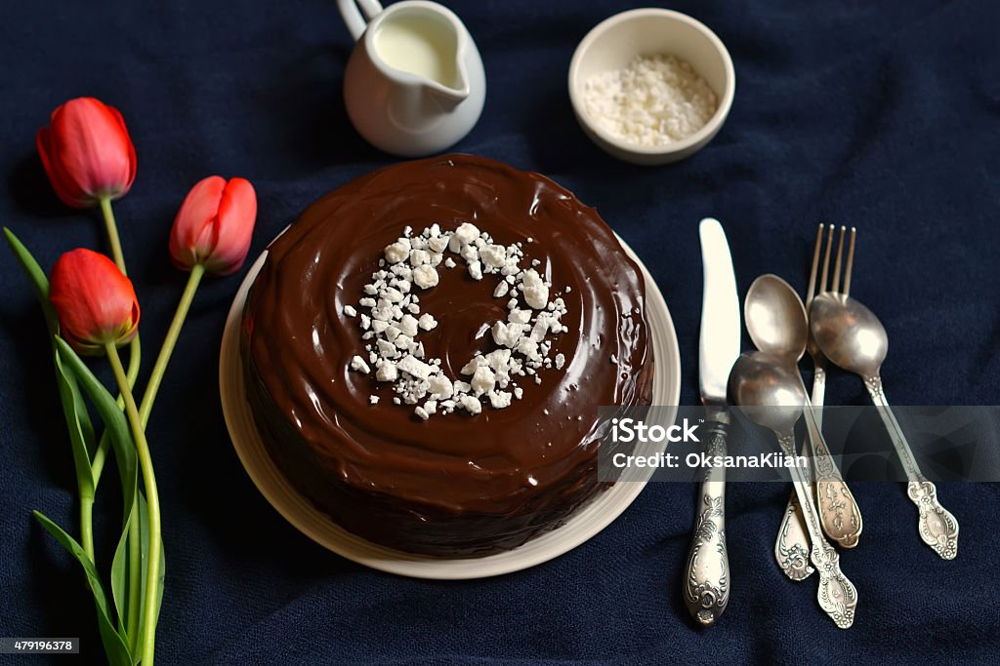

«Великая шоколадная стена»
У этого десерта оригинальный рецепт, исполнение и подача.
Готовится он из топленого горького шоколада и малинового джема,
и сам десерт очень популярен в США. Состав включает в себя
ванильный экстракт, сухую мучную смесь, сливки, взбитое масло,
молоко и яйца (после их добавления масса взбивается заново),
а в муку и сливки добавляют немного соли. Из крупных кусков топленого шоколада
делается глазурь и слоями ложится между выпеченными коржами.
Сам торт подается с малиновым джемом и горстью свежих ягод.
Заказать можете у нас по номеру телефона: 88005553535